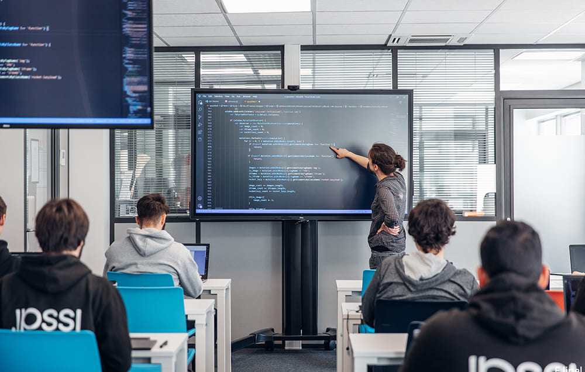

Le BTS SIO option SLAM est une formation de deux ans centrée sur les technologies informatiques appliquées aux besoins des organisations. Les étudiants y acquièrent des compétences avancées en développement logiciel, incluant la programmation, la conception d'applications, et la gestion de bases de données. Ils sont également formés à la gestion de projets informatiques, apprenant à planifier, organiser et superviser des initiatives technologiques au sein d'entreprises variées.

Le BTS SIO (Services Informatiques aux Organisations) propose deux options principales :
L'option SLAM, qui se concentre sur le développement de logiciels et d’applications métiers, avec des compétences en programmation, conception d’applications, et gestion de bases de données. Les débouchés incluent développeur d’applications et analyste programmeur.
L'option SISR, qui forme des spécialistes en administration des systèmes et réseaux, couvrant l'installation, la configuration, et la sécurité des infrastructures réseau. Les débouchés incluent administrateur réseau et technicien de support informatique.